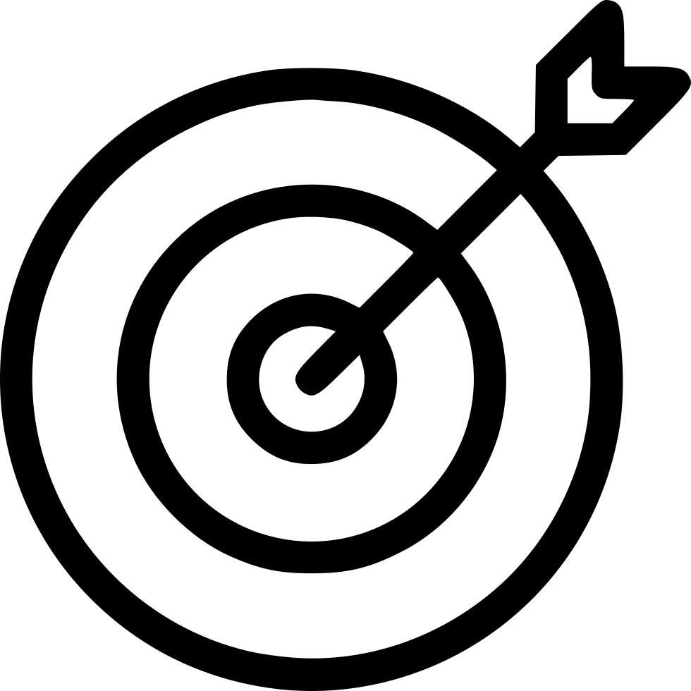
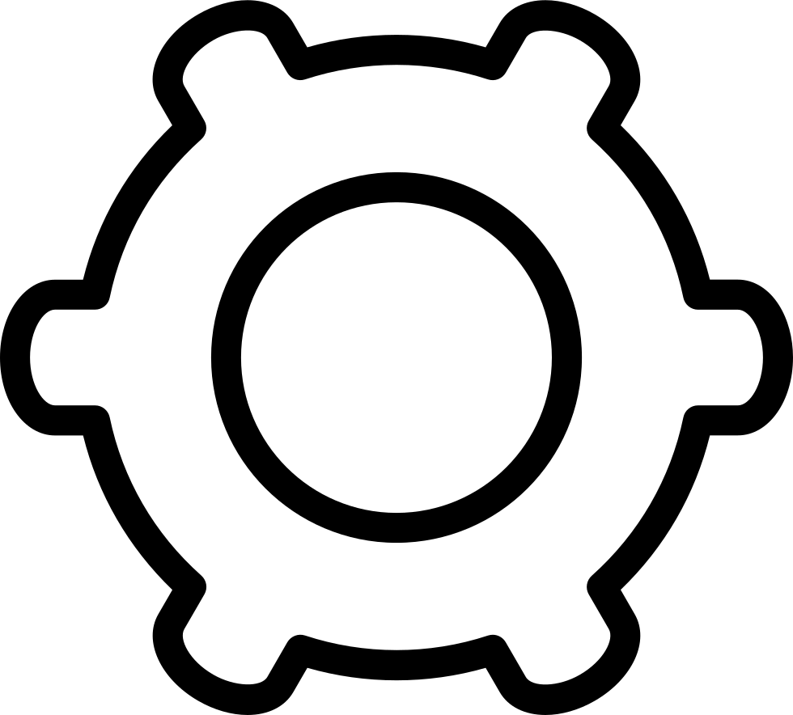

Lansing Office of Financial Empowerment
Project Details

Timeline
Four months with three UMSI grad students.

Product Goals
OFE's goal is to equip low-income or at-risk residents for financial success.

Project Goals
Foster better connections between the office and those they serve.

Systems Used
Figma, Jira, Lucidcharts.
Process |
|||
I. Needs Assessment |
II. Usability Evaluation |
||
Interviews |
Evaluation |
Prototyping & Iteration |
|
We interviewed stakeholders to determine initial findings about the system. |
We determined ways that the program could connect with similar financial institutions to measure success. |
We prioritized our findings and created a low-fidelity prototype. |
|
Interviews
Process
- Interviewed four stakeholders
- Reached out to area banking institutions
- Evaluated COVID-19 intersections
Findings
There was a lack of communication as to what the OFE's services were capable of from prior
resident experience as well as in conversation with banking partners. What emerged was a clearer picture of some
of the earlier notions expressed by residents, seen in the image to the right, about why they dont pursue institutional
banking.
Lessons Learned
I learned the ability to quicky chase leads in an closed environment, especially through the use of interviews.
Evaluation
Process
- Held conversations with national BankOn leaders
- Connected these possibilities to BankOn's national metrics
Findings
Through conversations with stakeholders and BankOn leaders, we were able to connect
the OFE to existing resources, like the National BankOn Data Hub seen in the image to the right.
Lessons Learned
I learned that often, the best solution is in plain sight. With a tool now integrated into their program, OFE could now gauge the success of their programs.
Prototyping
Process
- Prioritized actionable items on the prototype
- Iterated on the prototype with feedback from the client
Findings
One of our first prototypes, seen in the leftmost image, shows some of our early ideation.
The depositing of money, especially in the contexts of COVID-19 and stimulus checks, was decided to be the most important.
Next,
users had to be aware of what institutions partnered with BankOn, and finally, how to connect to the office with the highlighted financial appointment button.
Lessons Learned
This project had some of the more extensive iterations in prototyping that I had been involved with until that point. I now understand that process to be key to clearly communicating the results of research.
You can see more of our development process behind our prototype here.Outcome
At the end of the project, we were able to
present a brief synopsis video to the client that explained our
overall findings and recommendations for the platform. We were able to leave the project with
the knowledge that FII had a better understanding of the implications of their redesign on users.